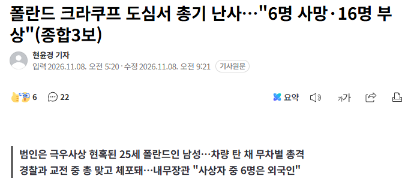
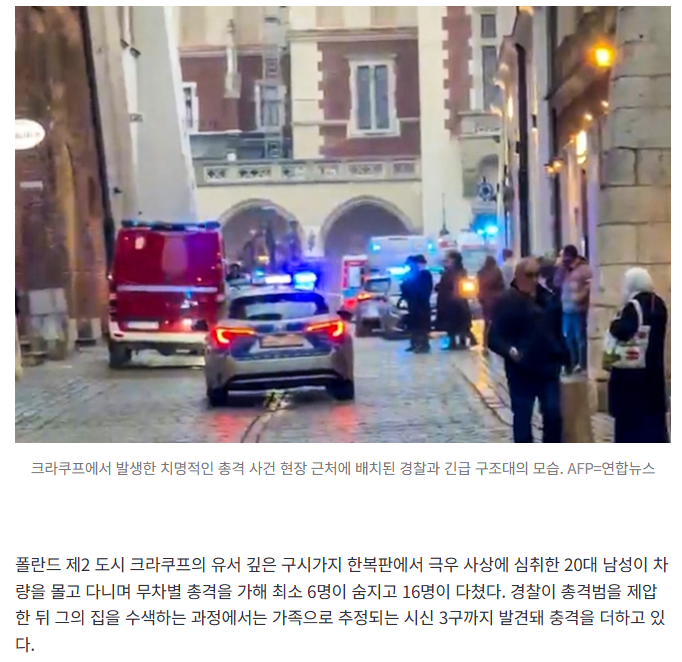

폴란드도 총기소지 가능 국가였나
수렵용 엽총은 물론 공기총까지 경찰서에 강제 영치하는 제도를 가진 나라는 한국 이외엔 전무하다더라
한국이 사실상 섬나라라 그렇지
육로 이어진 국가에 총이 없을 수 없음
한국도 총기 밀수 가능함 실제로 없진않을거라고 하는데 쓰는순간 공권력 총동원수준이라 안쓰는것뿐..
작정하고 밀수하면 못 막음
작정 하면 달에도 총 가져 감
뭔 소리 하는겨
한중일 북한 영국 싱가포르
이 6개 국가 빼고 전부 다 총기 소지 가능 국가임
영국도 엽총같은건 개인소지 가능일걸 ...
일본도 마찬가지고 ..
극우 극좌 둘 다 존나 싫어해야할 나라에서 왜
삶이 힘들면 의지할곳을 찾는듯
대부분의 정치병자들 보면 진짜 가족 직장 동아리 그 어디에서도 소속감을 얻지못하는 환경이 대부분인거 같다.
어쩌겠음 정치쪽으로 단순하게 한쪽이 싫다고 외쳐대면 그 반대편에서는 환영하면서 같은편취급은 해주잖냐 ㅋㅋㅋ
저런건 사실 자살 같은거라
sns 공포, 혐오 조장이 일상인 곳이 폴란드임 잘못된 sns소문으로 50명이 이민자숙소 습격할 정도로 심각함
벨라루스가 21년도에 난민 공격한 뒤로는 반난민 공감대가 생겨서 정당들이 나서서 민족주의에 기반한 반외국인 여론 부추김
그래서 프랑스 때도 sns에 난민 안 받아서 평화롭니 뭐니 호들갑 떨었는데 우크라난민은 받아서 민족주의자들 더 극렬해짐
제1야당인 pis는 온건한 애들 전부 쫓아낼 정도로 지금 폴란드 여론이 심각함
우리나라는 쨉도 안되네;
이민자 안받는게 왜 폴란드잘못임? 개웃기네 ㅋㅋㅋ 유럽국가면 샌드니거 이슬람들 다 받아야됨?
뭐에 화난거임?
벨라루스에서 분탕치려고 일부러 난민 던지는게 먼저인데 아무튼 혐오임 이러고 있자너 그리고 폴란드가 난민을 받아야할 이유가있음?
여기 이민자 안받는거 자체가 문제라고 어디 써있냐 혐오정서든 반외국인정서를 바탕으로 민족주의자들이 극렬해지고 그걸 가속화하고 표가 결집되니 이런 상황이 일어난다는거 아니니 문해력 진짜 심각
벨라루스에서 분탕칠려고 국경에 이민자 던져놓고 개지랄하니까 그런거지 무조건 혐오타령하면 아주 무적이지 ㅋㅋ
폴란드가 입에 거품 물고 반대하는 건 무슬림 난민에만 해당하고, 우크라 난민은 전쟁 초기에는 1000만명 수용했음. 그 중 150만이 폴란드에 정착하고 200만 정도는 독일로 갔음. 나머지 대부분은 전쟁이 장기화되면서 우크라이나로 돌아감.
저출산 고령화로 인력 부족 문제가 있는 폴란드 입장에서는 문화권이 비슷하고 같은 인종인 우크라 난민 수용에는 오히려 적극적이었음. 저출산 극복하려고 뭐 할 필요도 없고, 더군다나 크게 문제를 일으킬 가능성이 적은 인구가 막 늘어나는 개꿀따리 이벤트를 놓칠 수야 없잖아.
우크라이나 난민은 문제가 없지 문화도 비슷하고
지금은 무슬림 난민 막는데 더 정성을 들이는 이유가, 독일도 더 이상 무슬림 수용을 안하기로 하고 폴란드-독일 사이에서 들어오려는 무슬림 난민들을 수용 안하기로 함.
그럼 낙동강 오리알 된 무슬림 난민들은 결국 폴란드에 정착해야함.(벨라루스가 무슬림 난민들을 비행기에 까지 태워서 폴란드 국경에 떨궈주기 땜에 이 새끼들 돌아가지도 못함)
근데 난민들이 다른 나라 씹창 내는 꼬라지를 본 폴란드가 그걸 좋아하겠니? 당연히 극혐하지. 그래서 지금은 벨라루스에서 넘어오려는 난민들 막는데 더더더 노력을 기울이는 거지.
그렇지. 막말로 북한에 폭동나서 젊은 여자랑 애들 100만명이 남한으로 피신해봐라. 이거 수용 안 할 거야? 저출산 고령화 시대에 인구 급증하는 개꿀따리 이벤트를? 낼름 삼켜서 인구로 삼아야지.
장벽세우고 난민 안받은데다가 시태 종료된게 언제인데 뭔 병신같은 소리를 쳐하고있어 무차별 총격은 내국인 외국인 가렸냐 총격범새끼 가족들도 외국인이냐? 아니 그래서 원댓글 쓴 애가 이민자 안받는게 문제라고 했냐니까 왜 대답 못하고 자꾸 봉창 두들김? 문해력 진짜 심각
ㅋㅋㅋ 지금도 현재진행형인데 뭔 종료타령은 ㅋㅋ 그리고 난민타령하지말라는거지 너부터 문해력 점검좀 받아야할듯
사태가 어떻게 현재진행형이냐 그 난민촌 철거하고 해산 본국 송환한게 언제인데? 난민타령은 누가했는데? 폴란드 정치인들이 외국인 혐오를 무기로 써먹었다는 얘기를 도대체 어떻게 이해해서 이러고있냐 진짜 문해력 심각
도미니크 타르친스키가 요즘 난민으로 유럽 씹창나는거 보고 폴란드는 이슬람에 의한 테러리즘이 없는 유럽국가 홍보하는데에 물이 올랐음 ㅋㅋㅋㅋㅋㅋ
도미니크 이 새끼 그래서 시중에서는 제법 인기 많거든? 근데 대선후보는 못됨. 당내에서 안 밀어준데 ㅋㅋㅋㅋ
도미닉 타르친스키
정착한 우크라 난민 150만명인데, 이 중 태반이 여자랑 아이들이라서 게토를 형성하지도 않고, 갱단을 만들지도 않음.
더군다나 언어가 비슷하기 때문에 짧은 어학 교육 이후 취업알선까지 일사천리로 코스 짜둬서 최대한 빨리 자립 가능하게 해줬음.(취업 안되서 돈없으면 자꾸 생계형 도둑질을 벌이게 되니까)
이렇게 유입된 150만명이지만, 우크라에서의 고급인력이라 하더라도 어학이나 풍습이 달라서 원래 자기 직종으로 못 가고 대부분 공장이랑 식당 서빙, 청소, 농가 과수원처럼 저학력 인부들이 필요한 곳으로 흘러 들어가 폴란드에 만연했던 인력 부족 문제를 해결하는데 크게 도움이 됐음.
덕분에 난민에 의한 범죄율은 별로 없었음.
반면 극우에 의한 난민 습격 범죄는 대폭 증가함.
이들은 난민들이 받는 정착 지원금 등에 불만을 가지고 있다함.
그럼 극우들에게 공격 받고 테러당하는 난민은 주로 여성과 어린이겠구나...
갈 곳 없고 직업 원하는 여자들이 1000만명이네? 폴란드 범죄자들 입장에서는 이거만큼 쉬운 타겟도 없지. 집에 가둬두고 난민 지원금 뺏어가고 지원 같은거 어떻게 받아야하는지 잘 모르고 어떻게 취업해야하는지 모르는 애들 집안 일 시키면서 성노예로 굴림.
더군다나 극우 쪽에서 민족주의를 표방하면서 '난민을 받아들이지 말아야 한다!!!!!(무슬림 말함)'
시민 : 아 난민이 좆같은 거구나!(무슬림 + 우크라)
이게 공식이 이렇게 흘러가면서ㅋㅋㅋ 극우주의자들한테는 모든 '난민'은 다 공격 대상임.
계백 ㄷㄷㄷ
뭔 애미뒤진 좆병신같은 소릴 쳐 하고있어 씨발아
근데 본인 딴에는 진짜 그런 환상이 있으니깐 총쏘고 사회정의구현을 추구했던거겠지
물론 계백도 그런 환상이 있으니 자기 가족 죽이고 전쟁에 나갔겠지 그런데 1400년전 완전히 다른 시대상의 인물이 저지른 짓을 그냥 여기 갖다대는게 맞음?
그게 바로 극우 마인드임
요즘 지네.나라 안전하다고 설레발 피더니 바로 업보빔 맞았네 ㄷㄷ
댓글 엄근진 찐따농도 뭔데
내눈엔 찐따새끼들 몇명이 보이는데 이상하다
어씨발 이상하다 현명하고 애국적인 개붕이들은 분명 사악한 개슬람이 테러일으킨다고 했는데
극우새끼들이 다 그렇지 머
저새끼 높은 확률로 여친없고 아다일거다
ㄷㄷㄷㄷㄷㄷㄷ